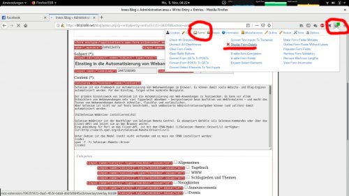
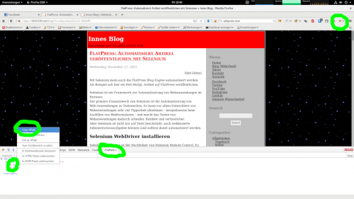

Einstieg in die Automatisierung von Webanwendungen mit Selenium, Perl und Firefox
Selenium ist ein Framework zur Automatisierung von Webanwendungen im Browser (hier Firefox). Es können damit viele Website- und Blog-Engines automatisiert werden. Für den Einstieg, folgen unten konkrete Beispiele.
Der primäre Einsatzzweck von Selenium ist die Automatisierung von Web-Anwendungen zu Testzwecken. Es kann vor allem Entwicklern von Webanwendungen sehr viel Tipparbeit abnehmen – beispielsweise beim Ausfüllen von Webformularen – und macht das Testen von Webanwendungen dadurch schneller, flexibler und verlässlicher. Aber Selenium ist nicht nur auf Tests beschränkt, auch webbasierte Administrationsaufgaben können (und sollten) damit automatisiert werden.
Selenium automatisiert Web-Browser. Das ist es! Was du mit dieser Kraft machst, liegt ganz bei dir.
Selenium WebDriver ist der Nachfolger von Selenium Remote Control. Es akzeptiert Befehle (als Selenese-Kommandos oder über das Client-API) und leitet sie an den Browser weiter. Eine Anbindung für Perl an das Client-API, ist mit dem CPAN-Modul Selenium::Remote::Driver verfügbar.
Unter Debian ist das Modul (noch) nicht vorhanden und es muss von CPAN installiert werden:
cpan -T -f -i Selenium::Remote::Driver
Wer möchte kann sich auch ein Debianpaket aus dem Modul bauen und mit der Paketverwaltung installieren (Dazu muss das Paket pkg-perl-tools installiert sein).
env DEB_BUILD_OPTIONS="nocheck" cpan2deb Selenium::Remote::Driver
Um statt des Selenium Standalone-Server den Browser Firefox nutzen zu können, muss der Proxy geckodriver installiert werden. Dieser stellt die vom WebDriver-Protokoll beschriebene HTTP-API für die Kommunikation mit Gecko-Browsern wie Firefox bereit. Den Download finden man unter: https://github.com/mozilla/geckodriver/releases/.
Zur Installation lade das Release für deine Plattform herunter, entpacken es nach /usr/local/bin/ und machen es ausführbar. Dies ist für die folgenden Beispiele notwendig!
Ist der entsprechenden Treiber installiert, können Sie das Modul Selenium::Remote::Driver direkt verwenden, um Selenium WebDriver zu starten. Diese Methode erfordert weder die Installation des JRE/JDK noch den Selenium Standalone-Server. Es muss nur die entsprechende Klasse für die Treiberkonstruktion verwenden werden.
use Data::Dumper;
use Selenium::Firefox;
my $driver = Selenium::Firefox->new(
binary => '/home/user/Downloads/geckodriver-v0.30.0-linux64/geckodriver'
);
$driver->get('http://www.google.com');
print Dumper($driver->get_title);
my $query = $driver->find_element('q', 'name');
$query->send_keys('CPAN Selenium Remote Driver');
my $send_search = $driver->find_element('btnG', 'name');
$send_search->click;
# make the find_element blocking for a second
# to allow the title to change
$driver->set_implicit_wait_timeout(2000);
my $results = $driver->find_element('search', 'id');
print Dumper($driver->get_title);
END {
$driver->quit;
}
Welche Funktionen das Modul bietet, zeigt die (englischsprachige) Dokumentation: http://search.cpan.org/dist/Selenium-Remote-Driver/.
Welche Funktionen das Modul bietet, zeigt die (englischsprachige) Dokumentation: http://search.cpan.org/dist/Selenium-Remote-Driver/
$driver->getNavigiert zu einer bestimmten URL.
Usage: $driver->get('http://www.example.net');
$driver->find_elementSucht nach einem Element (XML/HTML) auf der Seite, ausgehend vom Wurzelelement im DOM-Baum.
Das Element wird als Objekt der Klasse WebElement zurückgegeben.
Die Funktion erwartet zwei Argumente:
xpath. Es kann eines der folgenden sein: class, class_name, css, id, link, link_text, partial_link_text, tag_name, name oder xpath.Usage: $driver->find_element("//input[@name='q']");, $driver->find_element("eindeutige Kennung", "id");
Wird kein Element gefunden, bricht das Skript mit einer Fehlermeldung ab. Soll stattdessen nur eine Warnung ausgegeben werden, muss eine der folgenden Funktionen benutzt werden:
find_element_by_classfind_element_by_class_namefind_element_by_cssfind_element_by_idfind_element_by_linkfind_element_by_link_textfind_element_by_namefind_element_by_partial_link_textfind_element_by_tag_namefind_element_by_xpathDaneben gibt es noch die Funktion $driver->find_child_element.
Diese sucht nach einem Element beginnend, ab einem anderen Element als Startpunkt im DOM-Baum.
Die Funktion erwartet zwei Argumente:
In einer XPath-Angabe darf keine absolute Angabe verwendet werden (/), um nach Kind-Elementen zu suchen. Verwenden Sie stattdessen die relative Angabe ..
Usage:
my $start_element = $driver->find_element("//select[@name='ned']");
# note the usage of ./ when searching for a child element instead of //
my $child = $driver->find_child_element($start_element, "./option[@value='es_ar']");
Statt nur nach einem Element (dem ersten) zu suchen, kann auch nach allen Elementen, die auf das Suchmuster passen, gesucht werden. Dazu bietet das Modul die folgenden zwei Funktionen:
find_elementsfind_child_elementsDiese funktionieren analog zu den oben genannten Funktionen, geben aber eine Liste der gefundenen Elemente zurück.
$element->send_keysSendet eine Sequenz von Tastendrücken an das Element.
Usage: $element->send_keys('A', 'B', 'C', "Text");, $element->send_keys($scalar);
Um spezielle Tastatur-Ereignisse zu senden, muss das Modul WDKeys benutzt werden:
use Selenium::Remote::WDKeys; # include the WDKeys module
$element->send_keys(KEYS->{'space'}, KEYS->{'enter'});
Alle verfügbaren Tastatur-Ereignisse sind hier definiert: https://github.com/teodesian/Selenium-Remote-Driver/blob/master/lib/Selenium/Remote/WDKeys.pm#L17.
$element->clickKlickt auf das Element.
Usage: $element->click();
$element->get_attributeGibt den Wert eines Attributs zurück.
Die Funktion erwartet als Argument, den Namen des Attributs.
Usage: $element->get_attribute('name');
$element->get_textGibt den Wert von innerText/textContent zurück.
Usage: $element->get_text;
XPath wird verwendet, um durch die Elemente und Attribute - dem sog. Document Object Model (DOM) - eines XML-Dokument zu navigieren. Es ist ein Teil des W3C XSLT-Standards.
Siehe auch:
Zum untersuchen des DOM und erstellen von XPath-Angaben, eigenen sich die Firefox Erweiterungen/das Add-ons https://addons.mozilla.org/de/firefox/addon/web-developer/. Es vereinen vieles aus https://addons.mozilla.org/firefox/addon/firepath/ und https://addons.mozilla.org/de/firefox/addon/firebug/.
Dort dann unter dem Punk Element untersuchen des Kontext-Menüs.
Um die Bezeichner von Formularfeldern herauszufinden, eignet sich ebenfalls das Firefox Add-on Web Developer dort der Punkt Forms im Kontext-Menü.

Um XPath von Elementen im DOM herauszufinden, eignet sich ebenfalls das Firefox Add-on Webdeveloper dort der Punkt Kopieren XPath im Kontext-Menü.

use Storable;
my $cookies_path = "./cookies.text";
# Cookies öffnen
my $cookies = ( -r $cookies_path ) ? Storable::retrieve($cookies_path) : [];
for ( @{$cookies} ) {
eval {
$_->{secure} = 0; # overwrite
$_->{httponly} = 0; # overwrite
$driver->add_cookie(
$_->{name}, $_->{value}, $_->{path},
$_->{domain}, $_->{secure}, $_->{httponly}
);
};
@_ && warn @_;
}
# Cookies speichern
Storable::store( $driver->get_all_cookies, $cookies_path );